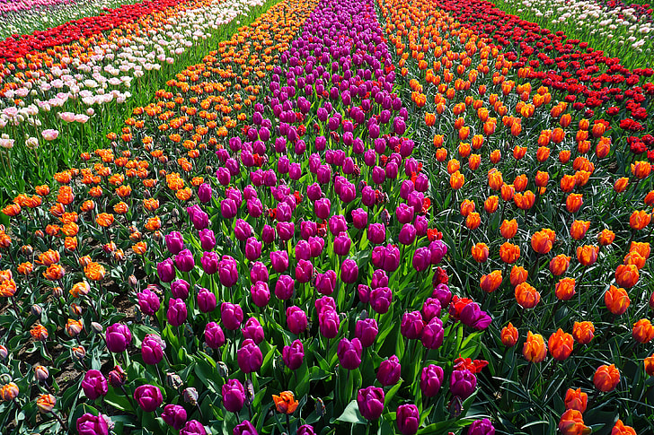

Roses are one of the most beautiful and popular flowers in the world. They symbolize love, beauty, and passion. Roses come in many colors such as red, white, pink, and yellow.
Tulips:-Tulips are bright and colorful spring flowers. They are known for their cup-shaped petals and come in a wide variety of colors. Tulips symbolize happiness and elegance.
SunFlowers:-Sunflowers are large yellow flowers that turn toward the sun. They represent positivity, warmth, and energy. Sunflowers are loved for their bright and cheerful look.